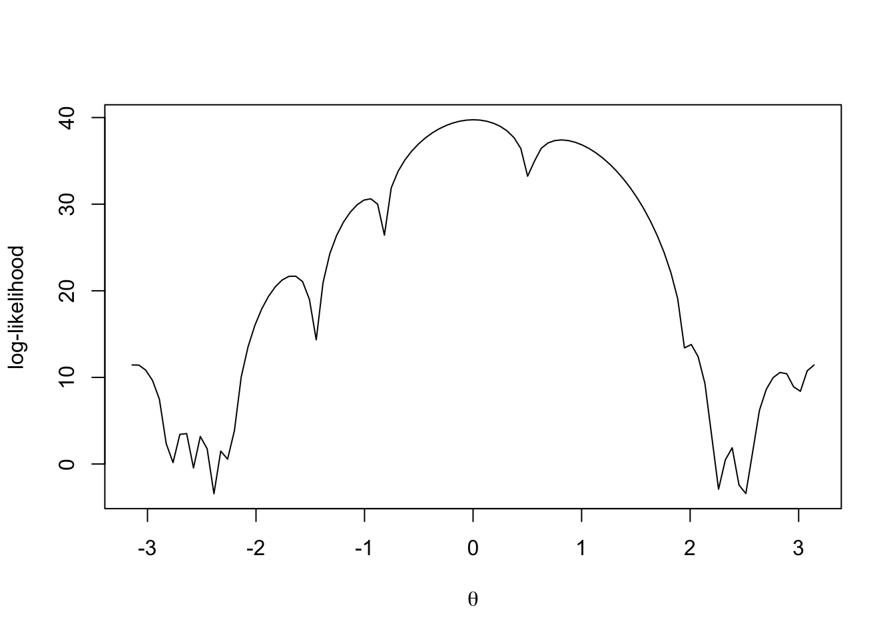

Problem 2 Exercise 3.2
2.1 Find the the log-likelihood function
The log-likelihood function of this distribution is
\[ \ell(\mathbf{x}, \theta) = \sum_{i=1}^n \log\{1-\cos(x_i-\theta)\} - n\log2\pi\]
x <- c(3.91, 4.85, 2.28, 4.06, 3.70, 4.04, 5.46, 3.53, 2.28, 1.96,
2.53, 3.88, 2.22, 3.47, 4.82, 2.46, 2.99, 2.54, 0.52)
loglikelihood <- function(theta){
n <- length(x)
s <- sum(log(1 - cos(x - theta))) + n * log(2 * pi)
return(s)
}
loglikelihood <- Vectorize(loglikelihood)
curve(loglikelihood, -pi, pi, xlab = expression(theta), ylab = "log-likelihood")
2.2 Find the method-of-moments estimator
The expectation of \(\mathbf{x}|\theta\) is \[\begin{align*} \mathbb E (x | \theta) &= \int_{0}^{2\pi} x \frac{1-\cos(x-\theta)}{2\pi} dx \\ &= \frac{1}{2\pi} \int_{0}^{2\pi} x - x\cos(x-\theta) dx \\ &= \pi + \sin(\theta) \\ &= \bar{X_n} \end{align*}\]Thus,
theta_tilde <- asin(mean(x) - pi)
theta_tilde## [1] 0.095394072.3 Find the MLE
Since
\[\frac{\partial\ell(\mathbf{x}; \theta)}{\partial\theta} = \sum_{i=1}^n \frac{-\sin(x_i - \theta)}{1-\cos(x_i-\theta)}\]
\[\frac{\partial^2\ell(\mathbf{x}; \theta)}{\partial \theta^2} = \sum_{i=1}^n \frac{\cos(x_i-\theta) - \cos^2(x_i-\theta)-\sin^2(x_i-\theta)}{(1-\cos(x_i-\theta))^2}\]
The Newton-Raphson method is
\[\hat\theta^{(t+1)} = \hat\theta^{(t)} - \left\{\frac{\partial^2\ell(\mathbf{x}; \hat\theta^{(t)})}{\partial \theta^2}\right\}^{-1}\frac{\partial\ell(\mathbf{x}; \hat\theta^{(t)})}{\partial\theta}\]
lfd <- function(theta){
sum(-sin(x-theta)/(1-cos(x-theta)))
}
lsd <- function(theta){
sum((cos(x-theta) - (cos(x-theta))^2 - (sin(x-theta))^2)/(1-cos(x-theta))^2)
}
Newton <- function(init){
theta0 <- init
i <- 0
diff <- 1
msg <- "converge"
while(abs(diff) > 0.0000001){
lfd <- lfd(theta0)
lsd <- lsd(theta0)
diff <- (lfd/lsd)
theta1 <- theta0 - diff
theta0 <- theta1
i <- i+1
#cat(i)
if(i >= 150){
msg <- "Not converge"
theta0 <- Inf
break
}
}
return(list(theta = theta0, itr = i, msg = msg))
}
Newton(theta_tilde)## $theta
## [1] 0.003118157
##
## $itr
## [1] 4
##
## $msg
## [1] "converge"2.4 \(\theta_0 = 2.7\) or \(\theta_0 = -2.7\)
Newton(-2.7)## $theta
## [1] -2.668857
##
## $itr
## [1] 4
##
## $msg
## [1] "converge"Newton(2.7)## $theta
## [1] 2.848415
##
## $itr
## [1] 5
##
## $msg
## [1] "converge"The \(\hat\theta\) we got is different.
2.5 Repeat the above using 200 equally spaced starting values
init <- seq(-pi, pi, length.out=200)
result <- NULL
for(initi in init){
result <- rbind(result, c(initi, Newton(initi)$theta))
}
colnames(result) <- c("Initial_value", "theta_hat")
split(result, result[,2])## $`-3.11247050669846`
## [1] -3.141593 -3.110019 -3.078445 -3.046871 -3.015297 -2.983724 -2.952150
## [8] -2.920576 -2.889002 -2.857428 -2.825855 -3.112471 -3.112471 -3.112471
## [15] -3.112471 -3.112471 -3.112471 -3.112471 -3.112471 -3.112471 -3.112471
## [22] -3.112471
##
## $`-2.78655685241805`
## [1] -2.794281 -2.786557
##
## $`-2.78655685241804`
## [1] -2.762707 -2.786557
##
## $`-2.66885745902142`
## [1] -2.731133 -2.699560 -2.667986 -2.636412 -2.604838 -2.668857 -2.668857
## [8] -2.668857 -2.668857 -2.668857
##
## $`-2.50935603320277`
## [1] -2.573264 -2.541691 -2.510117 -2.478543 -2.446969 -2.415395 -2.509356
## [8] -2.509356 -2.509356 -2.509356 -2.509356 -2.509356
##
## $`-2.38826662826452`
## [1] -2.383822 -2.388267
##
## $`-2.29792596896698`
## [1] -2.352248 -2.297926
##
## $`-2.29792596896697`
## [1] -2.320674 -2.289100 -2.257526 -2.297926 -2.297926 -2.297926
##
## $`-2.23219189887219`
## [1] -2.225953 -2.232192
##
## $`-1.66271239546243`
## [1] -2.194379 -2.162805 -2.131231 -2.099657 -2.068084 -2.036510 -2.004936
## [8] -1.973362 -1.941788 -1.910215 -1.878641 -1.847067 -1.815493 -1.783919
## [15] -1.752346 -1.720772 -1.689198 -1.594477 -1.531329 -1.499755 -1.468181
## [22] -1.662712 -1.662712 -1.662712 -1.662712 -1.662712 -1.662712 -1.662712
## [29] -1.662712 -1.662712 -1.662712 -1.662712 -1.662712 -1.662712 -1.662712
## [36] -1.662712 -1.662712 -1.662712 -1.662712 -1.662712 -1.662712 -1.662712
##
## $`-1.66271239546242`
## [1] -1.657624 -1.626050 -1.562903 -1.662712 -1.662712 -1.662712
##
## $`-1.44750255268373`
## [1] -1.436608 -1.447503
##
## $`-0.95440583712848`
## [1] -1.4050339 -1.3103125 -1.2787387 -1.2155911 -1.1208697 -1.0577221
## [7] -1.0261484 -0.9945746 -0.9544058 -0.9544058 -0.9544058 -0.9544058
## [13] -0.9544058 -0.9544058 -0.9544058 -0.9544058
##
## $`-0.954405837128479`
## [1] -1.3734601 -1.3418863 -1.1524435 -1.0892959 -0.9630008 -0.8998532
## [7] -0.8682794 -0.8367056 -0.9544058 -0.9544058 -0.9544058 -0.9544058
## [13] -0.9544058 -0.9544058 -0.9544058 -0.9544058
##
## $`-0.954405837128476`
## [1] -0.9314270 -0.9544058
##
## $`-0.95440583712847`
## [1] -1.2471649 -0.9544058
##
## $`-0.954405837128466`
## [1] -1.1840173 -0.9544058
##
## $`0.00311815708656577`
## [1] -0.489393830 0.003118157
##
## $`0.0031181570865658`
## [1] -0.078934489 0.003118157
##
## $`0.00311815708656581`
## [1] 0.110508284 0.003118157
##
## $`0.00311815708656585`
## [1] -0.236803466 0.003118157
##
## $`0.00311815708656587`
## [1] -0.142082080 -0.047360693 0.003118157 0.003118157
##
## $`0.00311815708656589`
## [1] -0.678836604 -0.584115217 0.003118157 0.003118157
##
## $`0.00311815708656591`
## [1] -0.110508284 0.015786898 0.003118157 0.003118157
##
## $`0.00311815708656593`
## [1] -0.710410399 0.142082080 0.299951057 0.003118157 0.003118157
## [6] 0.003118157
##
## $`0.00311815708656597`
## [1] -0.457820035 0.003118157
##
## $`0.00311815708656598`
## [1] -0.015786898 0.236803466 0.268377262 0.003118157 0.003118157
## [6] 0.003118157
##
## $`0.00311815708656599`
## [1] -0.805131786 0.003118157
##
## $`0.003118157086566`
## [1] -0.741984195 0.003118157
##
## $`0.00311815708656601`
## [1] -0.268377262 0.394672444 0.003118157 0.003118157
##
## $`0.00311815708656602`
## [1] -0.647262808 -0.552541421 0.078934489 0.003118157 0.003118157
## [6] 0.003118157
##
## $`0.00311815708656603`
## [1] -0.773557990 -0.615689013 0.047360693 0.489393830 0.003118157
## [6] 0.003118157 0.003118157 0.003118157
##
## $`0.00311815708656604`
## [1] -0.363098648 0.003118157
##
## $`0.00311815708656606`
## [1] 0.457820035 0.003118157
##
## $`0.00311815708656607`
## [1] -0.426246239 0.003118157
##
## $`0.00311815708656609`
## [1] -0.173655875 0.003118157
##
## $`0.00311815708656611`
## [1] -0.205229671 0.003118157
##
## $`0.00311815708656612`
## [1] -0.394672444 0.363098648 0.003118157 0.003118157
##
## $`0.00311815708656613`
## [1] -0.299951057 0.003118157
##
## $`0.00311815708656615`
## [1] 0.205229671 0.003118157
##
## $`0.00311815708656793`
## [1] 0.426246239 0.003118157
##
## $`0.00311815708656861`
## [1] -0.520967626 0.003118157
##
## $`0.00311815708656864`
## [1] 0.331524853 0.003118157
##
## $`0.00311815708656926`
## [1] -0.331524853 0.003118157
##
## $`0.00311815708656987`
## [1] 0.173655875 0.003118157
##
## $`0.812637416717926`
## [1] 1.2787387 0.8126374
##
## $`0.812637416717938`
## [1] 0.8051318 1.4050339 0.8126374 0.8126374
##
## $`0.812637416717939`
## [1] 0.6788366 0.8126374
##
## $`0.81263741671794`
## [1] 0.5209676 0.5525414 0.5841152 0.6156890 0.6472628 0.7104104 0.7419842
## [8] 0.7735580 0.8367056 0.8682794 0.8998532 0.9314270 0.9630008 0.9945746
## [15] 1.0261484 1.0577221 1.0892959 1.1208697 1.1524435 1.1840173 1.2155911
## [22] 1.2471649 1.3103125 1.3418863 1.3734601 1.4366077 1.4681815 1.4997553
## [29] 1.5313291 1.5629029 1.5944767 1.6260505 1.6576243 1.6891981 1.7207719
## [36] 1.7523457 1.7839194 1.8154932 1.8470670 1.8786408 1.9102146 1.9417884
## [43] 0.8126374 0.8126374 0.8126374 0.8126374 0.8126374 0.8126374 0.8126374
## [50] 0.8126374 0.8126374 0.8126374 0.8126374 0.8126374 0.8126374 0.8126374
## [57] 0.8126374 0.8126374 0.8126374 0.8126374 0.8126374 0.8126374 0.8126374
## [64] 0.8126374 0.8126374 0.8126374 0.8126374 0.8126374 0.8126374 0.8126374
## [71] 0.8126374 0.8126374 0.8126374 0.8126374 0.8126374 0.8126374 0.8126374
## [78] 0.8126374 0.8126374 0.8126374 0.8126374 0.8126374 0.8126374 0.8126374
##
## $`2.00722323801594`
## [1] 1.973362 2.004936 2.068084 2.099657 2.131231 2.162805 2.194379
## [8] 2.007223 2.007223 2.007223 2.007223 2.007223 2.007223 2.007223
##
## $`2.00722323801595`
## [1] 2.036510 2.007223
##
## $`2.23701292270577`
## [1] 2.225953 2.257526 2.237013 2.237013
##
## $`2.37471166606864`
## [1] 2.289100 2.320674 2.352248 2.383822 2.415395 2.446969 2.374712
## [8] 2.374712 2.374712 2.374712 2.374712 2.374712
##
## $`2.48844965088485`
## [1] 2.478543 2.488450
##
## $`2.48844965088489`
## [1] 2.510117 2.488450
##
## $`2.84841532545741`
## [1] 2.541691 2.573264 2.604838 2.636412 2.667986 2.699560 2.731133
## [8] 2.762707 2.794281 2.825855 2.857428 2.920576 2.952150 2.983724
## [15] 2.848415 2.848415 2.848415 2.848415 2.848415 2.848415 2.848415
## [22] 2.848415 2.848415 2.848415 2.848415 2.848415 2.848415 2.848415
##
## $`2.84841532545742`
## [1] 2.889002 2.848415
##
## $`3.17071480048113`
## [1] 3.015297 3.046871 3.078445 3.110019 3.141593 3.170715 3.170715
## [8] 3.170715 3.170715 3.170715